データ基準 2026年11月6日19時52分(韓国時間):米国11月5日終値、韓国11月6日終値 · 再検証 2026年11月7日 · stayhungryasi.com
米国11月6日の取引結果は反映していない。
表記ルール:数値は出典ベースの事実である。「推定」は筆者の判断であり、シナリオ確率は筆者の主観的判断である。2度の全数検証を経ており、訂正・削除した項目は第2章の表にすべて残した。
利益相反の開示:本リサーチはAnthropicのAI(Claude)を用いて作成しており、本文にAnthropicのS-1損益と上場日程が登場する。投資勧誘ではない。
カードニュース12枚で見る
要点だけを12枚に要約した。画像をクリックすると拡大して見られる。

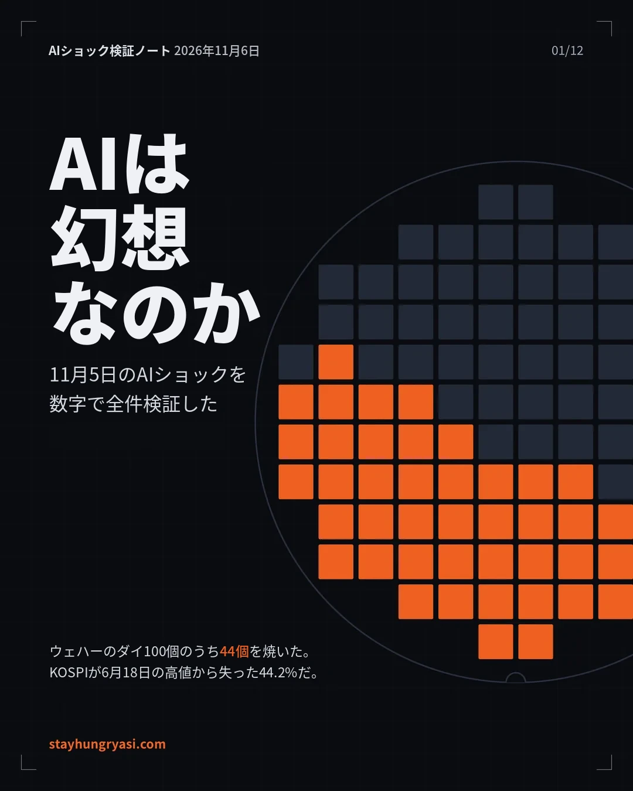

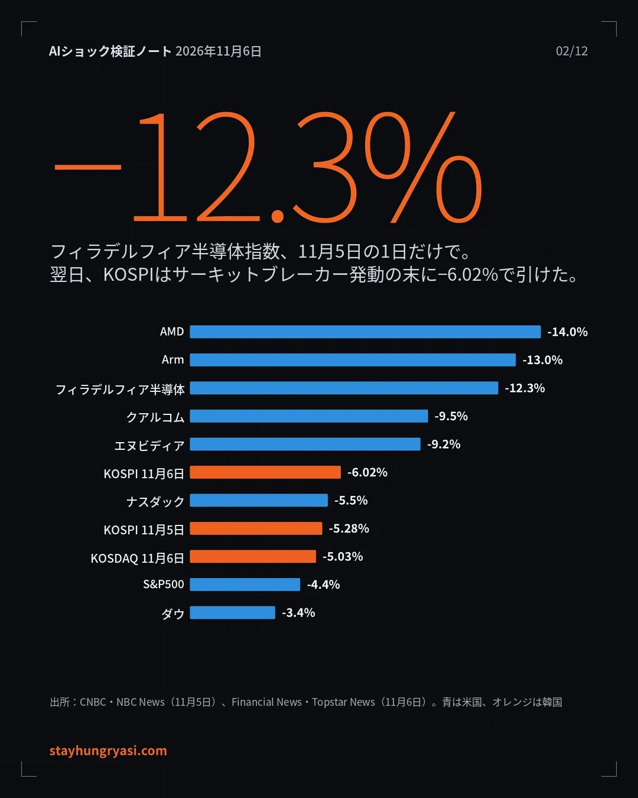

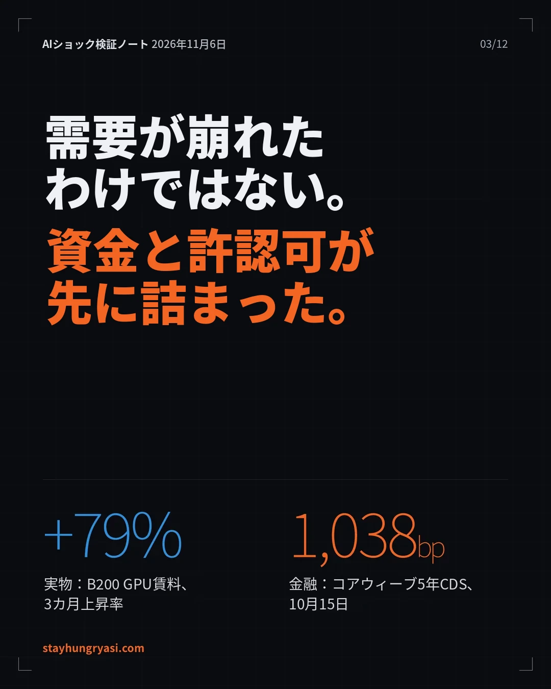

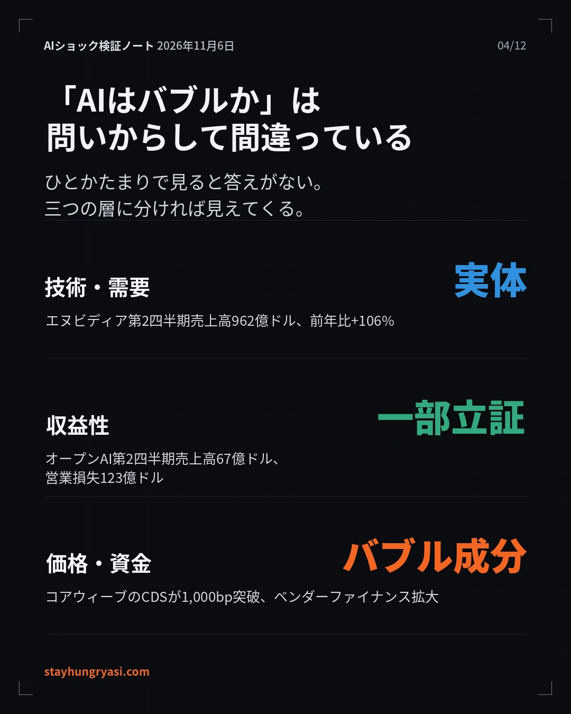

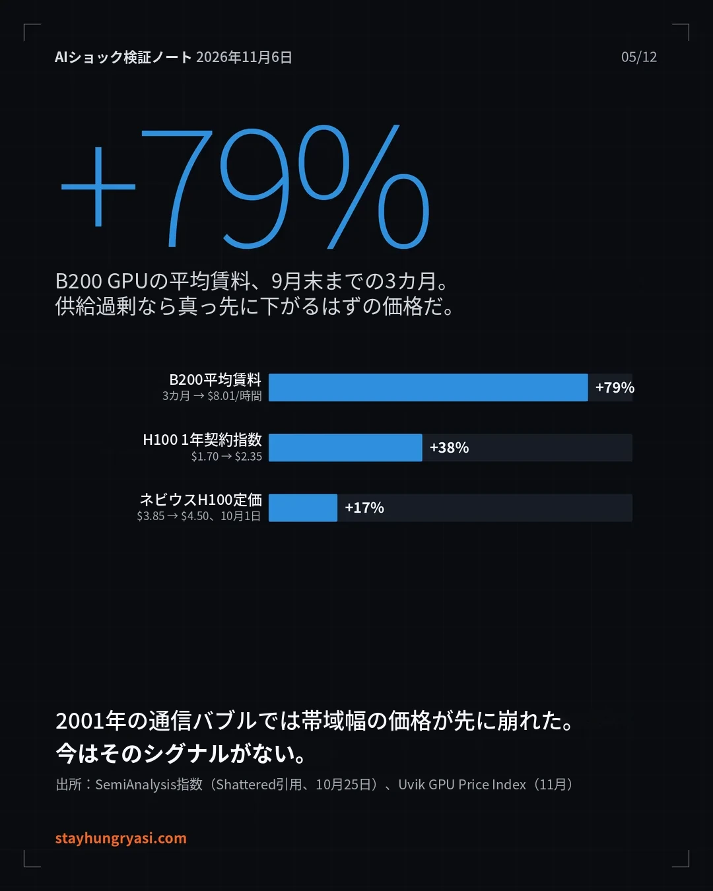

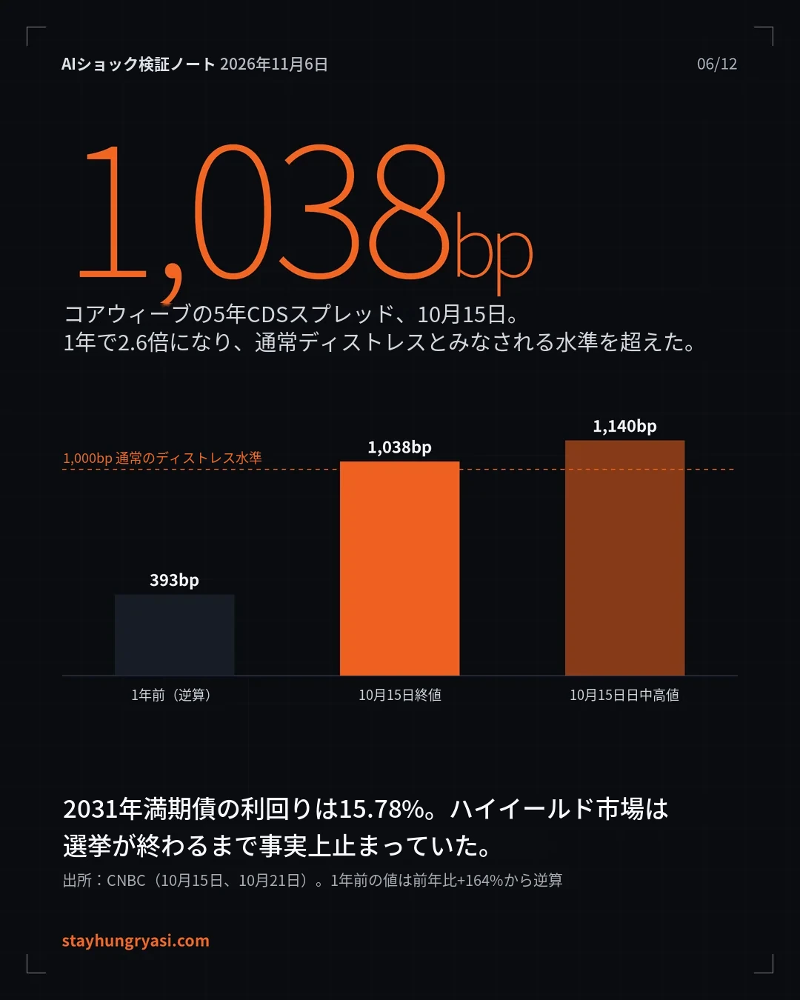

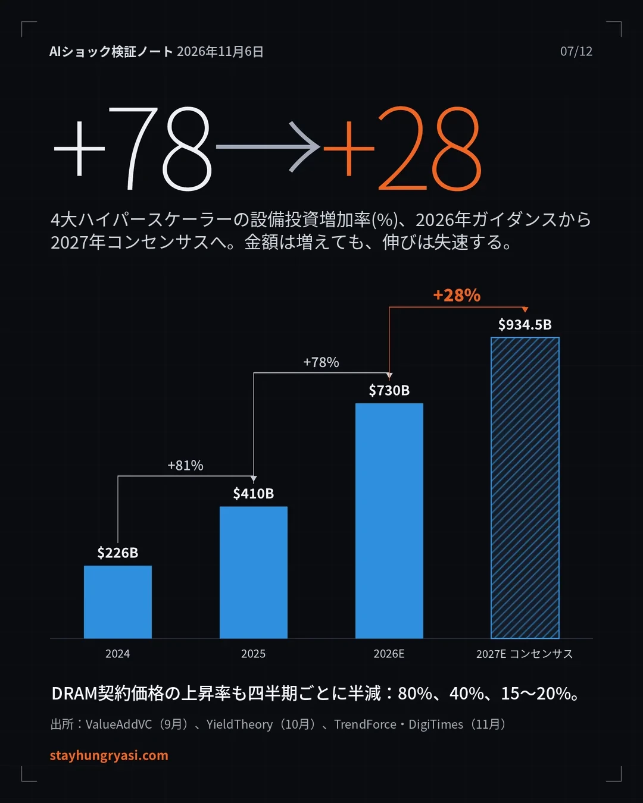

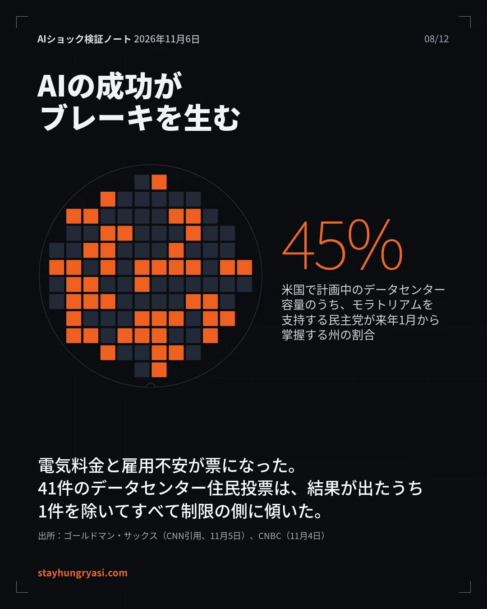

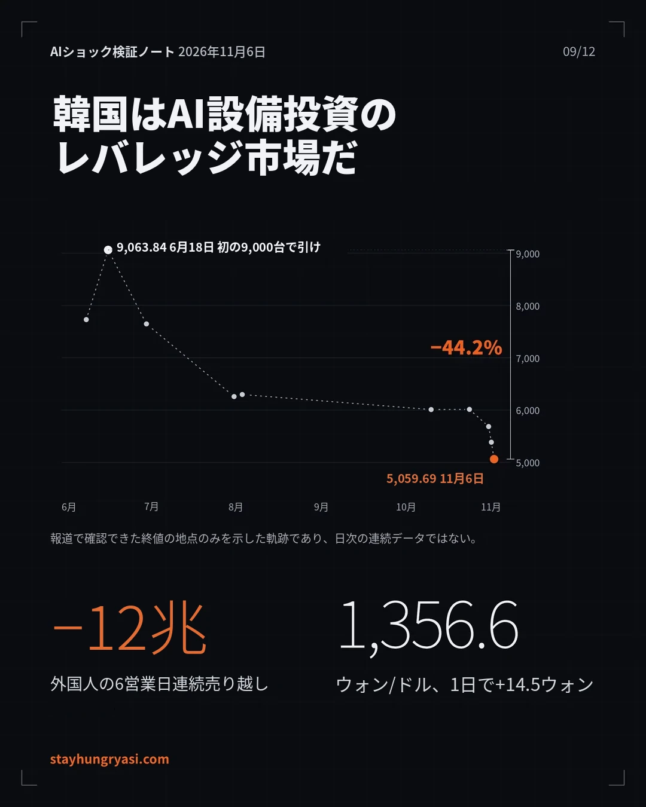

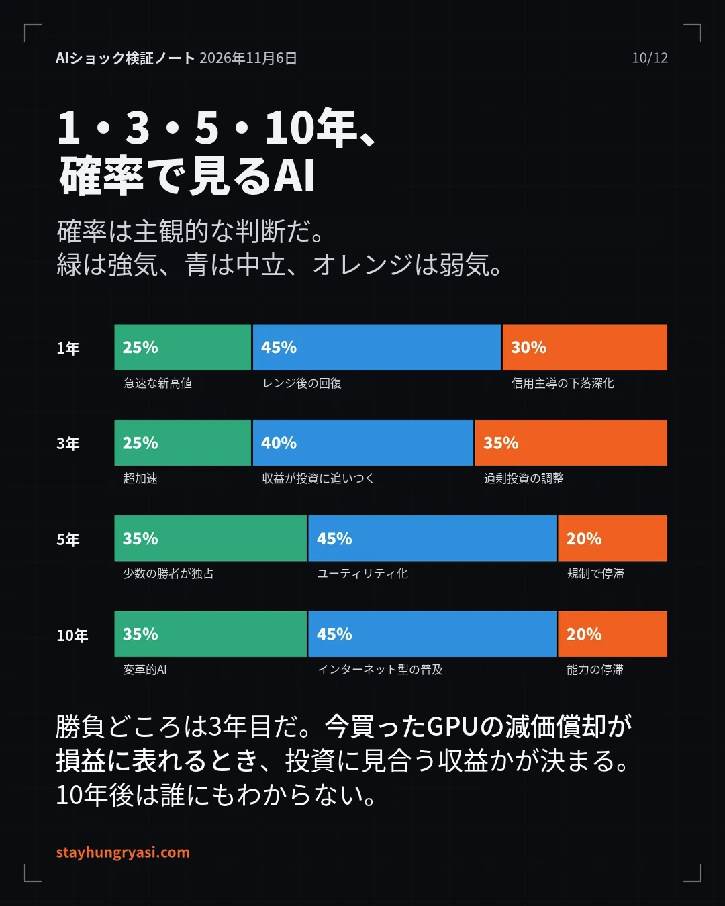

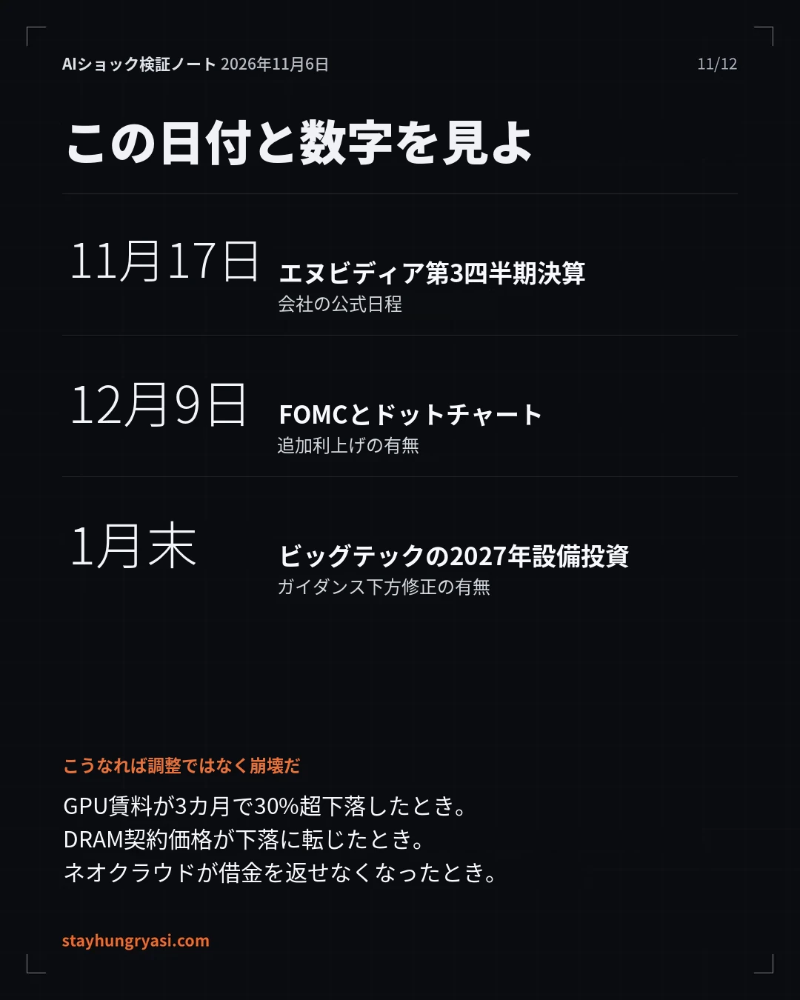

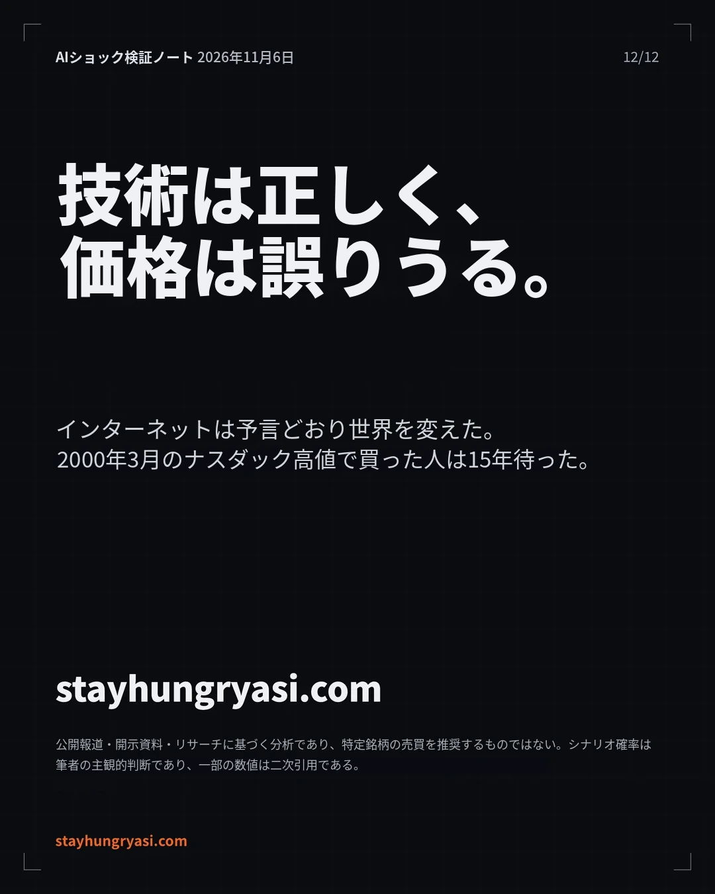
要約
- 今回の急落は「AI需要の崩壊」ではなく「資金調達・許認可の危機」である。B200 GPUのレンタル料は3カ月で79%上昇し、第4四半期のDRAM契約価格も15～20%上昇した。一方、CoreWeaveの5年CDSは1,038bpと、通常は経営危機とみなされる水準を超え、データセンターをめぐる住民投票41件は、結果が出たもののうち1カ所を除いてすべて制限の方向に傾いた。
- 3つの層の判定:技術・需要は実体(確信度高)、ビジネスの収益性は部分的に立証(中程度)、資産価格・資金構造にはバブル成分(確信度高)がある。OpenAIは第2四半期に売上高67億ドルに対し、営業損失123億ドルを計上した。
- 勝負を分けるのは11月17日のNvidia決算と、1月末のビッグテックによる2027年設備投資ガイダンスである。設備投資の増加率は2026年の78%から2027年はコンセンサス28%へと鈍化する。シナリオ確率は1年基準でボックス圏後の回復45%、信用発の弱気深化30%、早期の高値更新25%(筆者の判断)であり、底値は予測しない。
1. 何が起きたのか
11/4夜のQualcomm・Armの明暗分かれた決算と、11/3の中間選挙での民主党圧勝が重なり、11/5に米国のAIインフラ株が急落し、11/6にはアジアへ波及した。
図1. 2日間の衝撃:銘柄・指数別の騰落率
| 区分 | 事実 | 出典・日付 |
|---|---|---|
| 米国指数 | ナスダック -5.5%、S&P500 約 -4.4%、ダウ 約 -1,833ポイント(-3.4%) | CNBC, 11/5 |
| 時価総額 | マグニフィセント7で1兆ドル以上が消失、Nvidia単独で4,400億ドル以上の減少 | CNBC, 11/5 |
| 政治トリガー | 民主党が上下両院を掌握。10州41件のデータセンター住民投票のうち、結果が出たものはノースダコタ州ハーウッドの1カ所を除きすべて制限の方向 | CNBC, 11/4 |
| 決算トリガー | Arm -13%、Qualcomm -9.5%(11/4 引け後に決算発表) | NBC News, 11/5 |
| 韓国市場 | 09:03 サーキットブレーカー第1段階、09:34 売りサイドカー。取引時間中に4,911.28(-8.78%)まで下落した後、5,059.69(-6.02%)で引け。2日間累計 -10.98% | ファイナンシャルニュース・トップスターニュース, 11/6 |
| 為替 | ウォン/ドル 1,356.6ウォン(+14.5ウォン、+1.08%)。5/12以来最大の上昇幅、10/1以来の高値。取引時間中 1,362.2ウォン | ネイト(朝鮮ビズ)・ベータニュース, 11/6 |
市場の解釈は「AIは駄目だ」ではなかった。データセンター増設がより遅く、より高コストになるという解釈がサプライチェーン全体の成長期待値を書き換えている、というのが現場アナリストの共通した診断である(Fox Business, 11/5)。キウム証券のハン・ジヨン研究員も、規制の範囲・実際の遅延・AI需要の減少のいずれも確認されていないという点から、米国AI株の暴落を投げ売りの性格と見た(ニュースピム, 11/6)。
2. 全数検証:草稿の数値の照合
草稿に用いた数値を原出典と改めて照合した。確認・補完・訂正・不使用に分けて記録する。
| 判定 | 項目 | 検証内容 |
|---|---|---|
| 確認 | 米国指数・銘柄の騰落率 | ナスダック -5.5%、S&P -4.4%、半導体株指数 -12.3%、Nvidia -9.2%。複数メディアで一致 |
| 確認 | KOSPIの終値・安値 | 5,059.69(-6.02%、-324.11ポイント)、取引時間中 4,911.28(-8.78%)。09:03 サーキットブレーカー第1段階。ビジネスコリア・トップスターニュース・ニュースピムの3社で一致 |
| 確認 | Nvidiaの決算日 | 11/17(火)引け後、会社の公式告知(10/28)。一部トラッカーの11/18は確定前の推定値 |
| 確認 | FRBの9月利上げ | 9/16 全会一致で +25bp → 3.75～4.00%、2023年7月以来の利上げ |
| 確認 | KOSPI 9,000突破 | 6/18 終値9,063.84で史上初の9,000台引け、6/19 取引時間中 9,331 |
| 補完 | 外国人の11/6売り越し額 | 2兆7,692億～2兆8,395億ウォンと出典により異なる(集計時点の違い)。範囲で表記 |
| 補完 | Anthropicの第3四半期売上高 | 168億ドル(CNBC引用)と170億ドル(S-1集計)で異なる。再販売上を総額で認識しているため、純額基準の競合他社とは直接比較できない |
| 補完 | 「第1四半期GDP成長の約3/4」 | BEAの公式数値ではなく、アナリストが計算した推定値 |
| 補完 | Alphabetの設備投資/営業キャッシュフロー 121%、ハイパースケーラーのFCF -90% | リサーチ集計サイトの単一出典。クロスチェックできず |
| 補完 | FRBのその後の経路 | 10/28 据え置き(10対2)。12/9 利上げ確率 約81%は10/5時点の数値で、今回の急落後に変化している可能性あり |
| 訂正 | 「1999年のナスダック高値」 | 2000年3月の高値が正確。回復は2015年(約15年)で、結論は同じ |
| 第2次訂正 | サムスン電子・SK hynixの下落率 | 取引時間中の価格 → 終値基準に差し替え。18万8,700ウォン(-6.35%)、113万2,000ウォン(-10.44%)。下落率 -51.0%→-49.0%、-62.7%→-62.1% |
| 第2次削除 | 「S&P500・ダウ、2025年4月以来最悪の1日」 | 原文を確認できず、削除 |
| 第2次削除 | 業種別の騰落率の数値、サーキットブレーカー発動時点の指数 4,924.61 | 引け後の市況記事3本で再確認できず、定性的な記述に置き換え |
| 第2次訂正 | 新卒採用の求人 -35% | 「2023年1月以降、HBS引用」→ 「2023年初め以降、Revelio Labs(Fast Company引用)」 |
| 不使用 | AnthropicのSPVによるチップリース負債 710億ドル | 個人ブログが出典で検証不可のため除外 |
新たに見つかり結論を変えた3点:GPUレンタル料の上昇、CoreWeaveの信用ストレス、メモリ価格上昇率の鈍化。
3. 3つの層の判定
技術・ビジネス・資産価格をひとまとめにして見ると、「AIはバブルか」という問いの立て方そのものが誤ったものになる。
| 層 | 判定 | 確信度 | 主な根拠 |
|---|---|---|---|
| ① 技術・需要 | 実体 | 高 | Nvidiaの第2四半期売上高962億ドル(+106%)、第3四半期ガイダンス1,080億ドル。GPUレンタル料の上昇 |
| ② ビジネスの収益性 | 部分的に立証 | 中 | 売上高は急増、営業利益は赤字、または黒字転換後に再び赤字 |
| ③ 資産価格・資金構造 | バブル成分 | 高 | ネオクラウドの社債が経営危機水準、サプライヤー・ファイナンス、キャッシュフローの悪化 |
図2. 供給過剰なら先に下がるはずの価格が上がっている
図3. AI研究所の損益:売上高は実体、利益は未立証(10億ドル)
① 技術・需要:実体。Anthropicの2026年上半期売上高は163億ドルと前年同期の12億ドルから大きく伸び(Built In、S-1ベース)、第3四半期売上高は168億ドルと第2四半期より約45%増加した(FutureSearch、CNBC引用)。OpenAIの年換算売上高は9月末で約500億ドルであり、年末に700億ドル以上を目標とする(Bloomberg, 10/8)。最も重要な証拠は価格である。供給過剰であればGPUレンタル料が真っ先に崩れていたはずだが、逆に上昇している。
② 収益性:部分的に立証。OpenAIは第2四半期に売上高67億ドルに対し営業損失123億ドルを計上し、2026～2030年の累計マイナスのフリーキャッシュフロー見通しは2,780億ドルである(FT, 2026.9、Sacra引用)。Anthropicは第2四半期に初の営業黒字を出した後、第3四半期に再び赤字に転じ、上位5社の顧客が最初の9カ月の売上高の約25%を占める。
③ 資産価格・資金構造:バブル成分。CoreWeaveの2031年満期債の利回りは15.78%、5年CDSスプレッドは一時1,140bpを超えた(CNBC, 10/15)。ハイイールド市場は、データセンターへの政治的反発のため中間選挙後まで事実上止まっていた(CNBC, 10/21)。NvidiaはCoreWeaveの未販売容量を2032年4月まで買い取ることを約束した(InsiderFinance, 10/16)。
4. 強気論 対 弱気論
片方だけを見れば失敗する。双方の最も強い根拠を数字で並べる。
| 強気論:最も強い根拠 | 弱気論:最も強い根拠 |
|---|---|
| 供給不足を公式に確認。Microsoftは需要が供給を極端に上回っていると、Alphabetは依然として供給制約の状態にあると表明(IO Fund、第2四半期決算説明会) | 増加率の鈍化。4大ハイパースケーラーの設備投資増加率 2026年 +78% → 2027年コンセンサス +28% |
| 需要の質。Nvidiaは2027年(2028会計年度)の売上高を約70%成長と見通す。当時の投資家の期待は約44%(XTB, 8/27) | 現金の枯渇。Alphabetの第3四半期設備投資が営業キャッシュフローの121%、ハイパースケーラーのFCFは約90%減少の見通し(単一出典) |
| 売上高の軌跡。OpenAIの年換算売上高500億 → 年末に700億ドル以上が目標 | 金利。9月利上げ、10月据え置き(10対2)、12月の利上げ可能性が残る |
| 実物価格の上昇。B200レンタル料 3カ月で +79%、DRAM第4四半期契約価格 +15～20% | 許認可。モラトリアム拡大を支持する民主党が掌握した州が、米国で計画中のデータセンター容量の45%(Goldman Sachs) |
図4. ハイパースケーラーの設備投資:金額は増え、増加率は鈍る
図5. DRAM契約価格の前四半期比上昇率
45%
米国で計画中のデータセンター容量のうち、モラトリアム拡大を支持する民主党が来年1月から掌握する州の割合。ダイ1個が1%である。Wells Fargoはテキサス州1州が計画容量の27%を占めると推定した。
5. 歴史的比較と破壊的洞察
ドットコム(1999～2002)、通信バブル(1996～2002)、鉄道バブル(1840年代の英国)、2022年の金融引き締めと比較した。
| 共通点 | 相違点 |
|---|---|
| サプライヤー・ファイナンス。2000年のLucent・Nortelのベンダー・ファイナンスと同じ構造。Nvidiaは5,000億ドル以上の外部資本を呼び込む金融プラットフォームを公表し、CoreWeaveの未販売容量まで保証 | 実物価格が上がっている。2001年には光ファイバーの帯域価格が崩壊したが、現在はGPUレンタル料・DRAMが上昇中。過剰設備の証拠はまだない |
| 利上げ局面の亀裂。2000年・2022年と同様に、金利上昇がAI運営企業の株式・債券の急落をあおり、AIインフラのIPOを延期させた(Reuters、10月) | 売上高が実在する。Anthropic1社の四半期売上高が168億ドル。ドットコムの「売上なき成長」とは異なる |
| 極端な集中。6月時点でサムスン電子・SK hynixがKOSPI時価総額の約50%(二次引用) | ブレーキは政治。技術の成功そのもの(電気料金、雇用不安)が票に変わり、投資を阻む構造 |
5つの破壊的洞察
- 実物と金融の乖離。GPU・メモリは不足しているのに、ジャンク債市場は凍りついた。この種の危機はレバレッジが最も大きいところ(ネオクラウド)から弾け、サプライヤーへ波及する。まず見るべき指標は、Nvidiaの決算よりもCoreWeaveの社債である。
- Nvidiaが「最後の買い手」。顧客に資金を供給し、売れ残った容量まで買い取る。需要の一部がNvidiaのバランスシートから生まれており、循環リスクが1カ所に集中する。
- AIの成功がブレーキを生む。2月にはAI税務プランニングの登場で、資産運用株が手数料崩壊への懸念から急落した。今回は電気料金・雇用不安が規制となって跳ね返ってきた。OpenAIはすでに電力・インフラ費用の全額負担を発表している。
図7. CoreWeaveの5年CDSスプレッド
- 韓国は二階微分の打撃を二重に受ける。設備投資増加率の鈍化とメモリ価格上昇率の鈍化(80→40→20%)が重なった。売上高が伸びても株価が下がる局面である。
- 宇宙もAI設備投資の括りの中にある。S&P Globalの6社モデル(9月初め)は、SpaceXの2027年設備投資を1,970億ドルとして含めた。宇宙は非AIの分散手段ではない。
6. 時間軸別のシナリオ
すべての確率は主観的判断であり、予測ではなく思考の枠組みである。10年の区間は先行指標で判別できない。
図8. シナリオの確率分布(主観的判断)
| 時間軸 | 核心の問い | シナリオ(確率) | 確認材料となる先行指標・トリガー |
|---|---|---|---|
| 1年 | 資金調達の逼迫が実際の増設縮小へ波及するか | ボックス圏後の回復 45% 信用発の弱気深化 30% 早期の高値更新 25% | 回復:GPUレンタル料の維持、CoreWeaveの再調達成功 弱気:ネオクラウドの経営破綻、州単位のモラトリアム成立、12月の利上げ 高値更新:Nvidiaのガイダンス上方修正、Anthropic上場の好調 |
| 3年 | 投資に見合う収益が証明されるか(GPU減価償却の反映期) | 収益が投資を上回る 40% 過剰投資の調整 35% 超加速 25% | 上回る:AI売上高成長率 > コンピュート契約の増加率 調整:GPUレンタル料 3カ月で -30%以上、DRAMの下落転換 超加速:エージェントによる人件費代替のデータ |
| 5年 | ボトルネック(電力・メモリ・許認可)を誰が握るか | ユーティリティ化 45% 少数の勝者総取り 35% 規制で停滞 20% | 送電網投資の法案、データセンター費用分担の標準化の有無 |
| 10年 | 利益は誰の手に渡るか | インターネット型の拡散 45% 変革的AI 35% 能力の停滞 20% | 判別不能:分からない |
労働市場の参考:2026年2月の米国失業率は4.4%だったが、米国の新卒採用の求人は2023年初め以降で約35%減少(Revelio Labs、Fast Company引用、2026.7)。大量解雇ではなく「最初のはしごが消える」形で進行しており、2028年大統領選でAIが主要な争点になる可能性が高い。
7. 韓国株式市場とのつながり
韓国は、AI設備投資の加速・減速に世界で最も大きく反応する市場である。11/5のKOSPI下落率5.3%のうち、半導体の寄与度は約4.6%ポイントだった(キウム証券、ニュースピム引用)。
図9. KOSPIの確認済み終値の軌跡と高値からの下落率
図10. 外国人のKOSPI売り越し(兆ウォン)
| つながり | 観察 |
|---|---|
| 標的 | 11/6 外国人はSK hynixを1兆9,240億ウォン、サムスン電子を1,286億ウォン売り越し。純粋なAIメモリ(HBM)が集中的な標的に:「HBMの二階微分」への賭けと解釈 |
| 業種 | 半導体・電力機器・バッテリー・造船が急落し、通信株だけが相対的に持ちこたえた(トップスターニュース, 11/6) |
| 為替 | 外国人の売り → ドル送金需要 → ウォン安。10/28の1,320ウォン台から11/6には1,356.6ウォン |
| 年間の需給 | 今年の外国人によるKOSPI累計売り越し 219兆6,955億ウォン(ビジネスコリア, 11/6) |
8. 30～90日の日程と判別ダッシュボード
「バブル崩壊か、健全な調整か」を見極める日程と指標。
| 日付 | イベント | 確認レベル |
|---|---|---|
| 11/6(米国の夜) | 米国10月雇用統計 | 報道(ビジネスコリア) |
| 11/9の週 | Anthropicの投資家向けマーケティング開始予定 | Reuters報道、延期の可能性あり |
| 11/17 引け後 | Nvidia第3四半期決算(コンセンサス売上高1,088億ドル) | 会社公式 |
| 11/26前後 | Anthropicの上場目標時期。逃せば1月末～3月にずれ込む可能性 | 推定 |
| 12/9 | FOMC + ドットチャート | FRBの日程 |
| 2027年1月初め | 新議会の開会、州議会の開会、新任州知事の就任 | 制度上の慣行 |
| 1/27 | FOMC | FRBの日程 |
| 1月末～2月 | ハイパースケーラーの第4四半期決算・2027年設備投資ガイダンス、サムスン電子・SK hynixの第4四半期決算 | 慣行からの推定 |
| 指標 | 現在 | 健全な調整 | バブル崩壊のシグナル |
|---|---|---|---|
| ① GPUレンタル料 | B200 +79%/3カ月 | 維持・上昇 | 3カ月で -30%以上 |
| ② DRAM契約価格(QoQ) | +15～20% | プラスを維持 | マイナスに転換 |
| ③ CoreWeaveの社債・CDS | 利回り 約16%、CDS 約1,000bp | 低下、再調達に成功 | 支払い猶予・再調達の失敗 |
| ④ 2027年設備投資ガイダンス | コンセンサス 9,345億ドル | 維持・上方修正 | 下方修正 +「規制による遅延」への言及 |
| ⑤ Nvidiaの在庫・売上債権 | 320億ドル、60日 | 安定 | 2四半期連続の増加 |
| ⑥ 州単位の立法 | 公約の段階 | 費用分担ルールで妥協 | 許認可停止法案の成立 |
| ⑦ 外国人の需給・ウォン/ドル | 6日連続の売り、1,356ウォン | 買い越しに転換 | 1,400ウォン突破 + 売りの継続 |
出典
- CNBC: Magnificent 7 loses $1 trillion (11/5)
- NBC News: Stocks plunge as election outcome and AI worries crush tech (11/5)
- Fox Business: Stocks plunge as Dem midterm sweep fuels AI regulatory concerns (11/5)
- Kingy AI: AI Stock Selloff Nov 5 2026
- CNBC: Voters rebuff data centers in ballot measures (11/4)
- CNN: America got the anti-data-center wave it voted for (11/5)
- トップスターニュース:KOSPI 6.02%暴落で引け(11/6)
- ビジネスコリア:ブラックフライデーの引け後市況(11/6)
- ニュースピム:KOSPI 6%急落、5000台をかろうじて維持(11/6)
- ニュースウェイ:サムスン電子・SK hynixの終値(11/6)
- ネイト(朝鮮ビズ):ウォン/ドル、6カ月ぶりの最大上昇幅(11/6)
- NVIDIA:第3四半期決算カンファレンスコールの告知(10/28)
- SentiSense:Nvidiaの第2四半期決算と第3四半期ガイダンス(8/26)
- CNBC: CoreWeave CDS hit distress levels (10/15)
- CNBC: CoreWeave market confidence erodes (10/21)
- Shattered: B200 cloud price +79% (10/25)
- Uvik: GPU Price Index(11月)
- Quasarzone(TrendForce・DigiTimes引用):第4四半期DRAM上昇率の鈍化
- Luminix: Hyperscaler capex Q3 2026
- CNBC: Microsoft, Google capex (10/29)
- Bloomberg via Yahoo: OpenAI expects $70B annualized revenue
- AI Funding Tracker: Is OpenAI losing money?
- Exploding Topics: Anthropic revenue
- Reuters via Khaleej Times: Anthropic IPO stands alone
- SimianX: Fed rate decision history
- Admiral Markets: FOMC October 2026 hold
- ソウル新聞:KOSPI、史上初の9063.84で引け(6/18)
- ING Think: How much is AI contributing to US growth?
- Revelio Labs: Entry-level job postings are down 35%
本文で併せて引用したValueAddVC・YieldTheory・XTB・IO Fund・Sacra(FT引用)・FutureSearch・Built In・InsiderFinance・トゥイク24・世界日報・ファイナンシャルニュースの資料は、各表と図の説明に出典と日付を記した。
stayhungryasi.com · 情報提供を目的としたリサーチであり、投資勧誘ではない。投資判断と責任は投資家本人にある。